An AI system that looks at 5 years of Fantasy Premier League player data and answers two questions:
All data was fetched from the official FPL API. We collected 5 seasons of data (2021/22 to 2025/26) covering ~700 players per season.
| Stat | Value |
|---|---|
| Seasons covered | 2021/22 to 2025/26 |
| Raw player-season records | 2,017 |
| After feature engineering | 1,519 |
| After dropping NaN lags | 900 (used for modelling) |
| Training set (seasons 2021-2025) | 611 records |
| Test set (season 2025/26) | 289 records |
Midfielders and forwards score the most points on average. Goalkeepers are the most consistent (less variance). Defenders vary widely depending on clean sheets.
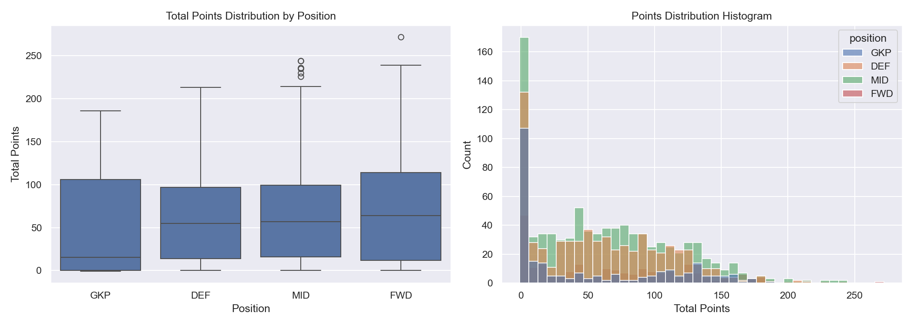
Players like Haaland, Salah, and Fernandes consistently top the charts — our model should correctly identify these as high-value picks.
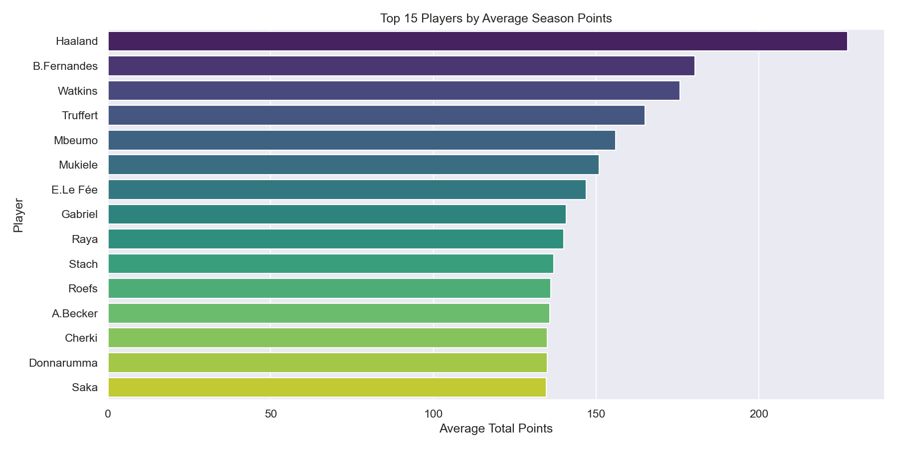
Average points per position have been relatively stable across seasons, with midfielders slightly increasing in recent seasons.
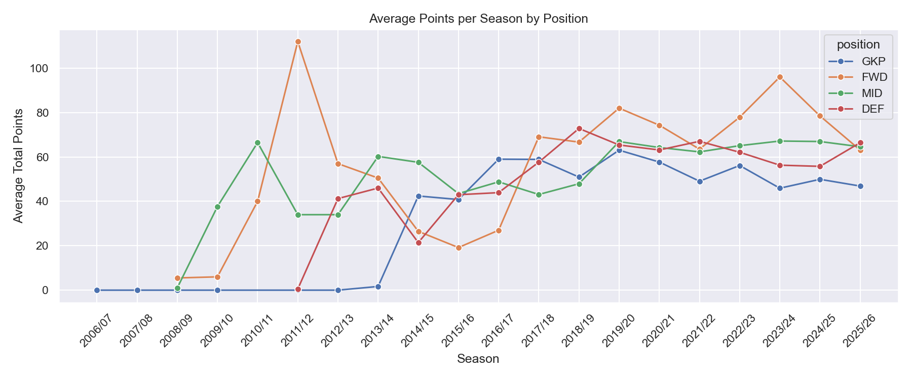
Higher priced players tend to score more points, but there are clear bargains — cheap players who punch above their weight. Our optimiser exploits this.
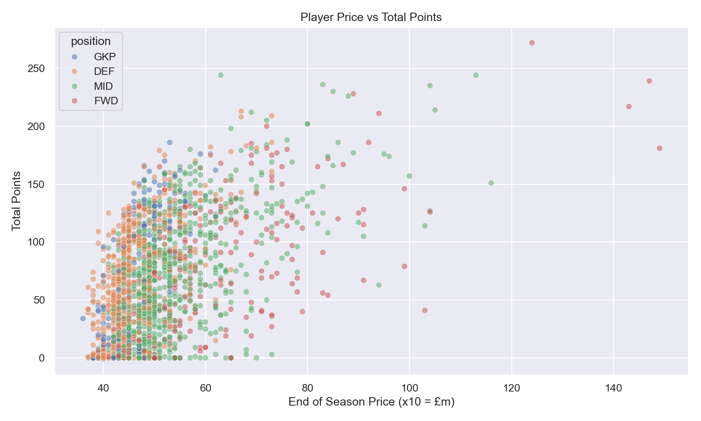
Minutes played and bonus points are most strongly correlated with total points. Goals and assists matter more for outfield players.
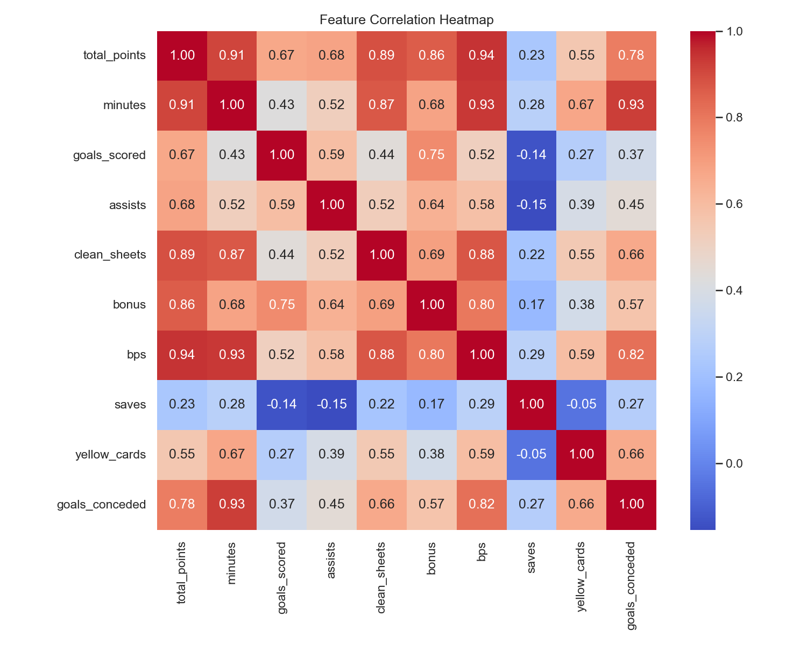
We created 24 features from the raw data. The most important ones are:
| Feature | What it means |
|---|---|
| total_points_lag1 | Points scored last season |
| total_points_lag2 | Points scored two seasons ago |
| minutes_lag1 | Minutes played last season |
| points_per_90_lag1 | Points per 90 mins last season |
| xg_per_90_lag1 | Expected goals per 90 last season |
| xa_per_90_lag1 | Expected assists per 90 last season |
| end_price | Player price at end of season |
| pos_GKP/DEF/MID/FWD | Position indicator |
Previous season points (lag1) is by far the strongest predictor — if you scored well last season, you are likely to score well again.
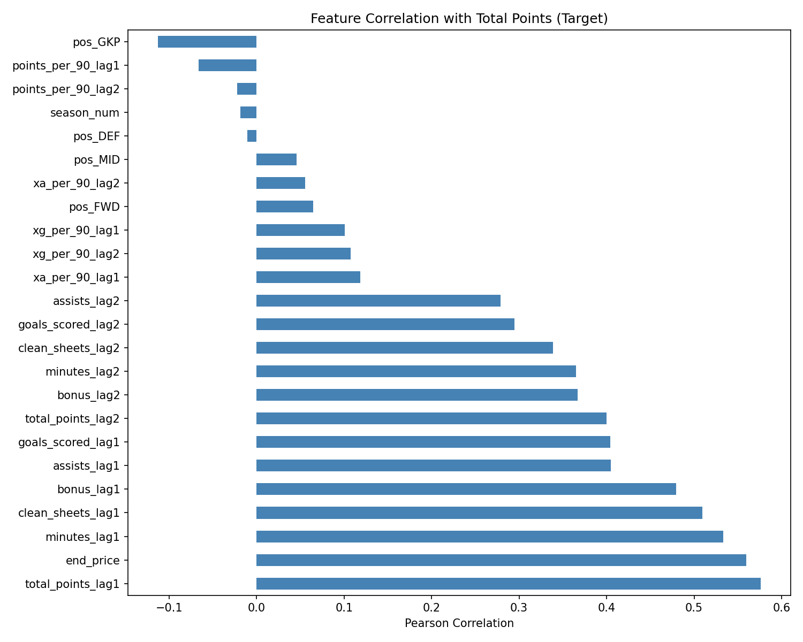
XGBoost is a powerful gradient boosting algorithm that builds many decision trees sequentially, each correcting the errors of the previous one. It works very well on structured tabular data like ours.
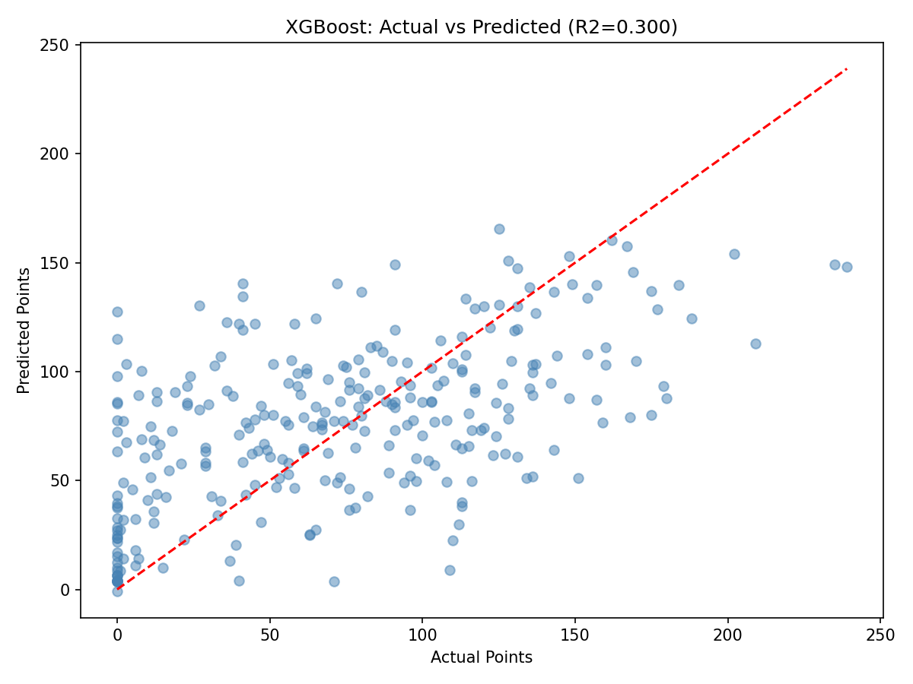
SHAP tells us which features matter most for each prediction. Previous season points (lag1) dominates — as expected. Minutes played and price are also important.
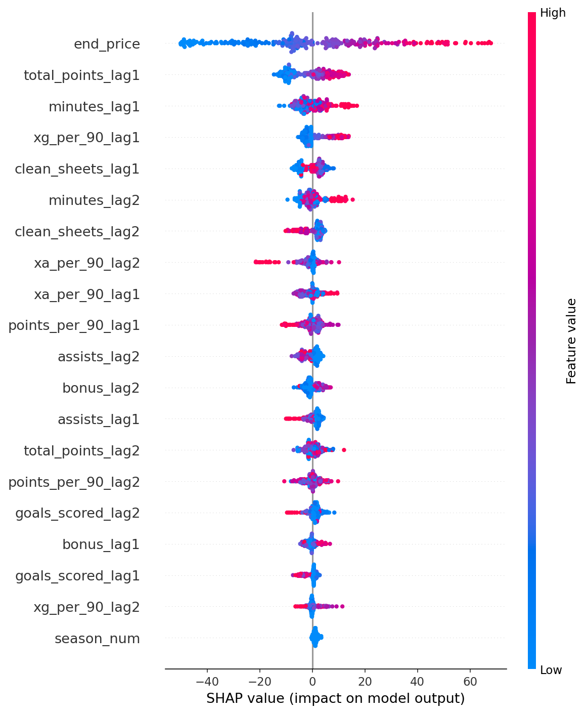
We also trained a Multi-Layer Perceptron (MLP) with 3 hidden layers, batch normalisation, and dropout to prevent overfitting. Features were standardised before training.
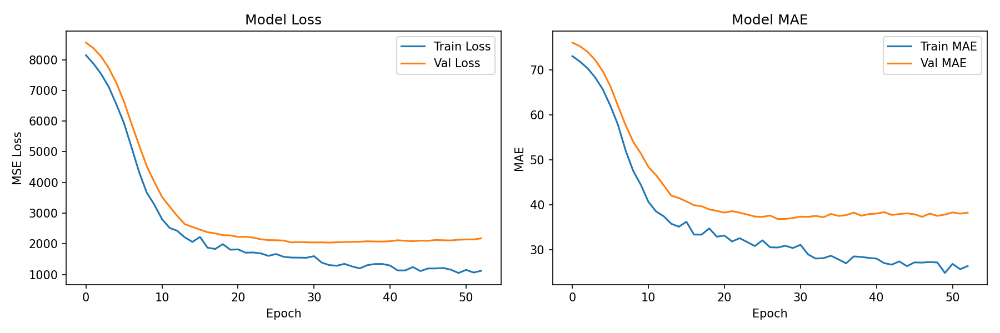
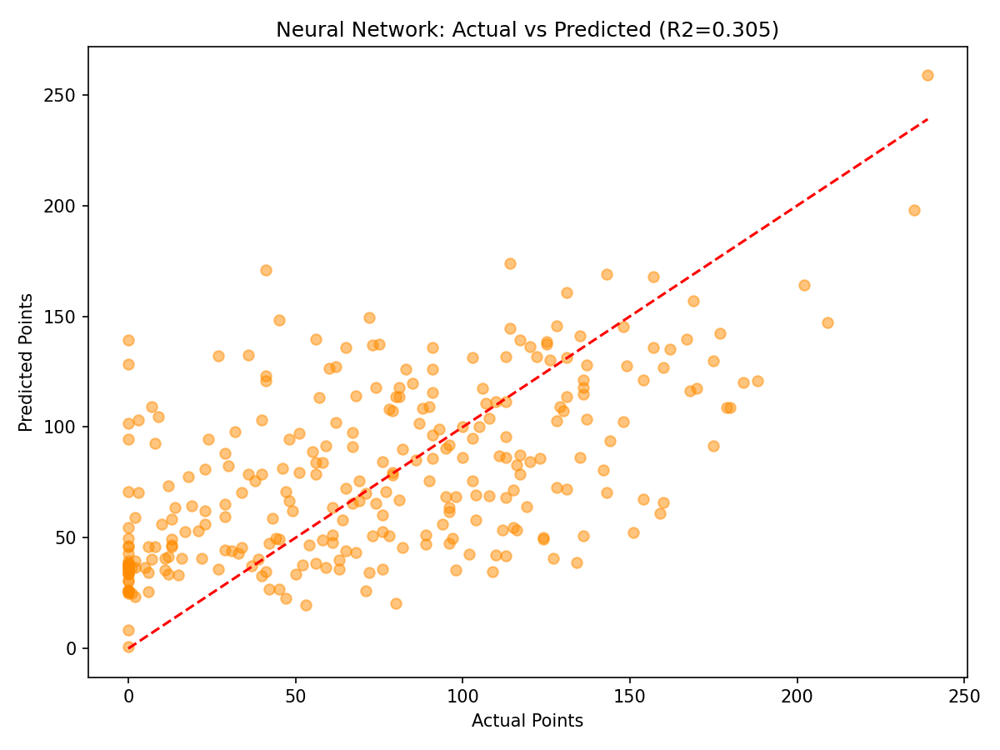
| Model | R² | MAE (pts) | RMSE (pts) |
|---|---|---|---|
| XGBoost | 0.300 | 35.50 | 45.05 |
| Neural Network | 0.305 | 36.53 | 44.89 |
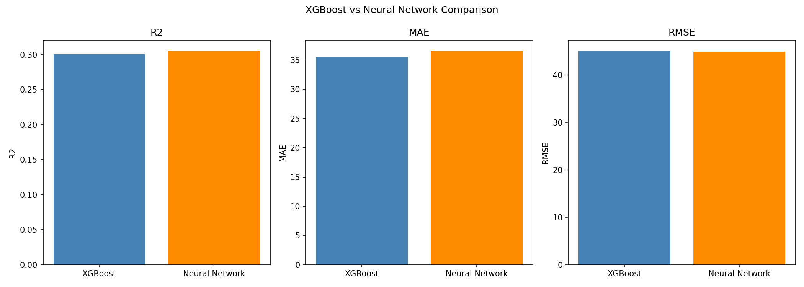
Forwards have the highest error — goal scoring is unpredictable. Goalkeepers are most accurately predicted — their points depend on stable metrics like clean sheets.
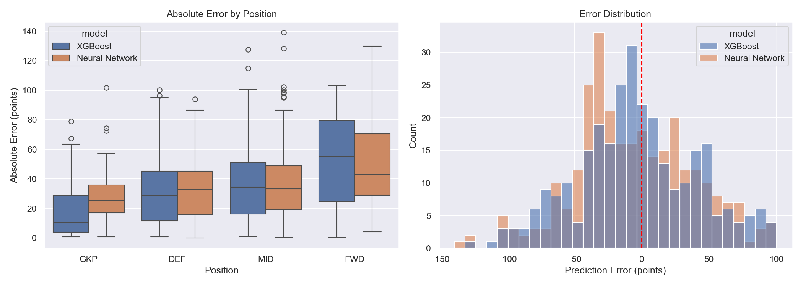
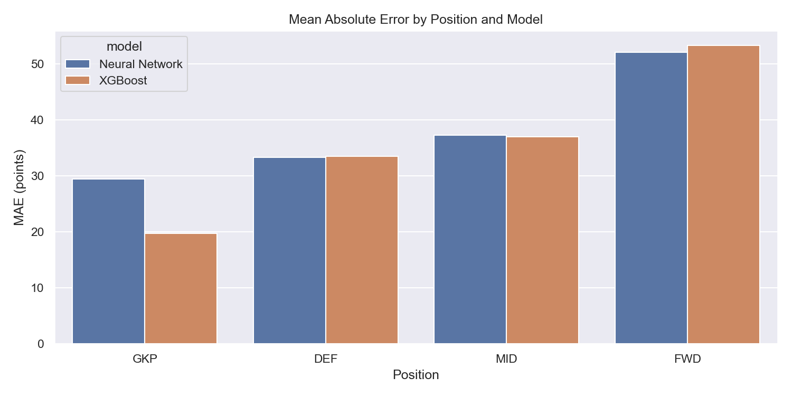
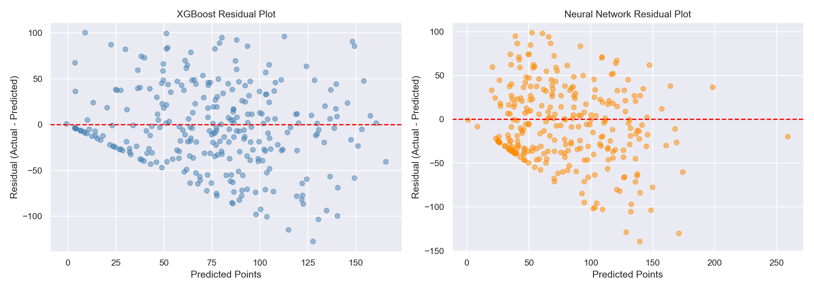
We averaged XGBoost and Neural Network predictions to get an ensemble score, then used Integer Linear Programming to pick the best 15 players within £100m.
| Constraint | Value |
|---|---|
| Total budget | £100m |
| Goalkeepers | 2 |
| Defenders | 5 |
| Midfielders | 5 |
| Forwards | 3 |
| Max per club | 3 |
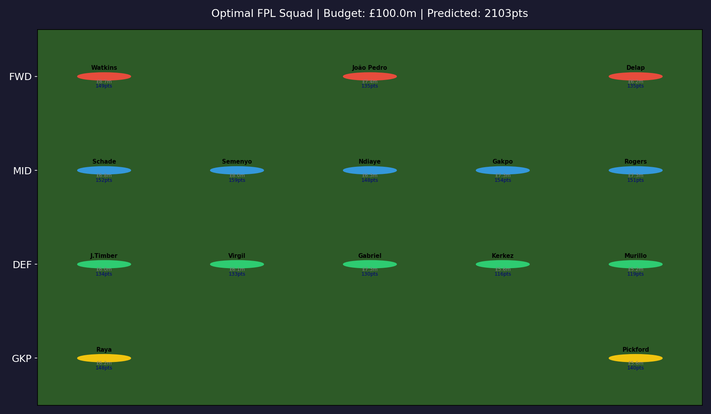
The pipeline works end to end:
Football is inherently unpredictable. Players get injured, managers change tactics, and form fluctuates week to week. An R² of 0.30 is consistent with published results in sports prediction literature. The key strength of our system is not perfect prediction — it is systematic, data-driven selection that outperforms random guessing.